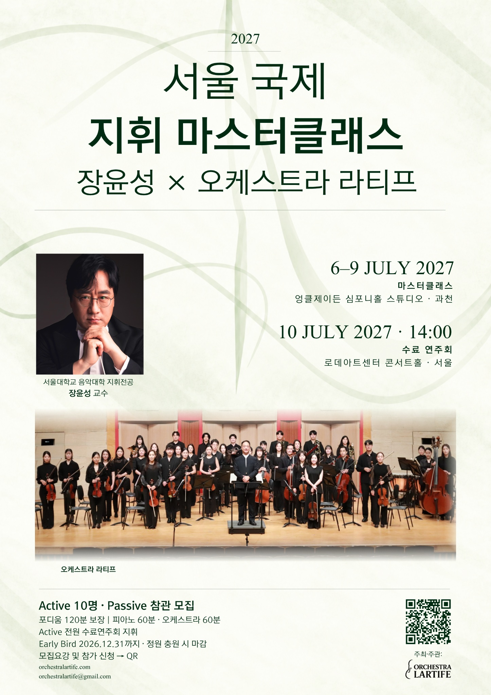

06–09 JULY · GWACHEON
06–09 JULY · GWACHEON엉클제이든 심포니홀 스튜디오
경기도 과천시 추사로 92-19
지도 보기 ↗참가 신청 접수 중
2027년 7월 6일–10일
장윤성 교수의 지도 아래 피아노와 오케스트라 실습으로 이어지는 5일간의 지휘 과정. 오케스트라 라티프와 함께 수료연주회 무대까지 경험합니다.
접수 시작: 2026년 10월 26일 · Active 정원 충원 시 마감

공식 포스터 보기 · 한국어 ↗THE MASTERCLASS
7월 6–7일 피아노 반주 수업, 8–9일 오케스트라 수업, 10일 최종 리허설과 수료연주회로 구성됩니다. Active 참가자에게 총 120분의 포디움 타임을 보장하며, 수료연주회 리허설과 공연 시간은 이 시간에 포함하지 않습니다.

PROFESSOR
서울대학교 음악대학 작곡과 지휘 전공 교수
지휘자 장윤성은 서울예술고등학교와 서울대학교 음악대학에서 작곡을 전공하고, 동 대학원에서 지휘 전공을 수료하였다. 이후 오스트리아 빈 국립음악대학 유학 중인 1993년, 러시아 상트페테르부르크에서 열린 제1회 프로코피예프 국제 지휘자 콩쿠르에서 2위에 입상하였으며, 1997년에는 일본 도쿄 국제 지휘자 콩쿠르에서 1위 없는 2위에 입상하였다.
러시아의 상트페테르부르크 필하모니, 상트페테르부르크 심포니, 카메라타 상트페테르부르크, 일본의 도쿄 심포니, 오사카 필하모니, 센다이 필하모니, 오스트리아의 빈 콘서트페라인, 클라겐푸르트 심포니, 독일의 로베르트 슈만 필하모닉 오케스트라 켐니츠, 뉘른베르크 심포니, 이탈리아의 로마 심포니, 스페인의 오케스트라 클라시카 산타 세실리아 마드리드, 헝가리의 MÁV 심포니 오케스트라, 체코의 프라하 방송교향악단, 프라하 심포니, 브르노 심포니, 야나체크 필하모니, 폴란드의 크라쿠프 라디오 심포니, 우크라이나의 하르키우 심포니, 세르비아의 베오그라드 심포니 등 국제적으로 명성 높은 여러 오케스트라를 지휘하였다.
또한 뉘른베르크 심포니와 독일 4개 도시 순회, KBS교향악단 일본 순회, 러시아 마린스키 오페라 오케스트라와 카메라타 상트페테르부르크의 한국 순회, 체코 브르노 필하모닉 오케스트라와 야나체크 필하모니의 오스트리아 클라겐푸르트·장크트푈텐 순회 등을 지휘하였다. 유니버설발레단과 함께 영국 새들러스 웰스 극장, 미국 시카고 리릭 오페라, 캐나다 밴쿠버 퀸 엘리자베스 극장에서 발레 공연을 지휘하였으며, 서울시오페라단의 도쿄·오사카 순회 등 교향악과 발레 음악, 오페라에 이르는 다양한 연주 투어에서 지휘봉을 잡았다.
1995년에는 폴란드 크라쿠프에서 펜데레츠키의 교향곡 제5번 《KOREA》를 유럽 초연하였다. 쇤베르크의 《구레의 노래》, 카셀라의 교향곡 제2번, 블로흐의 교향곡 올림다단조 등의 한국 초연과 수많은 국내 작곡가의 창작곡 초연을 비롯하여, 고전에서 근현대를 아우르는 폭넓은 레퍼토리로 왕성한 활동을 이어가고 있다.
오스트리아 Neustudio Bühne에서 모차르트의 《카이로의 거위》를 지휘한 것을 시작으로, 《피가로의 결혼》, 《돈 조반니》, 《코지 판 투테》, 《마술피리》, 로시니의 《결혼 청구서》, 《세비야의 이발사》, 훔퍼딩크의 《헨젤과 그레텔》, 도니체티의 《사랑의 묘약》, 베르디의 《리골레토》, 《라 트라비아타》, 《운명의 힘》, 《나부코》, 푸치니의 《일 트리티코》, 《나비부인》, 《라 보엠》, 《토스카》, 비제의 《카르멘》, 브리튼의 《한여름 밤의 꿈》, 오네게르의 《화형대 위의 잔 다르크》 등을 지휘하며 오페라 지휘자로도 활발히 활동하고 있다.
울산시향, 창원시향, 대전시향, 부천필하모닉오케스트라의 상임지휘자와 일본 오사카 칼리지 오페라하우스 전임지휘자, 서울시향 수석객원지휘자, 군포 프라임필하모닉오케스트라 전임지휘자 등을 역임하였으며, 일본 카메라타 레이블을 통해 음반을 발매하였다. 현재 서울대학교 음악대학 작곡과 지휘 전공 교수로 재직 중이다.
06–10 JULY 2027
| 날짜 | 교육 내용 | 시간 | 장소 |
|---|---|---|---|
| 2027.07.06 | 피아노 마스터클래스 | 09:00 오리엔테이션 09:30–12:30 14:00–17:00 | 엉클제이든 심포니홀 스튜디오 |
| 2027.07.07 | 피아노 마스터클래스 | 09:30–12:30 14:00–17:00 | 엉클제이든 심포니홀 스튜디오 |
| 2027.07.08 | 오케스트라 마스터클래스 | 09:30–12:30 14:00–17:00 | 엉클제이든 심포니홀 스튜디오 |
| 2027.07.09 | 오케스트라 마스터클래스 | 09:30–12:30 14:00–17:00 | 엉클제이든 심포니홀 스튜디오 |
| 2027.07.10 | 최종 리허설 및 수료연주회 | 10:30–13:00 리허설 14:00 수료연주회 | 로데아트센터 콘서트홀 |
시간은 한국 표준시(KST) 기준입니다. 세부 일정과 개인별 지휘 순서는 운영 상황에 따라 조정될 수 있습니다.
MOZART & BEETHOVEN
| 작품 | 지정 에디션 |
|---|---|
| W. A. 모차르트 — 《돈 조반니》 K. 527 서곡 | Breitkopf & Härtel |
| W. A. 모차르트 — 교향곡 제35번 라장조 K. 385 《하프너》 | Breitkopf & Härtel |
| L. v. 베토벤 — 《코리올란》 서곡 Op. 62 | G. Henle Verlag |
| L. v. 베토벤 — 교향곡 제2번 라장조 Op. 36 | Bärenreiter |
Active 참가자는 아래 4곡을 모두 준비해야 합니다. 수업에서는 희망 작품을 선택해 지도받을 수 있으며, 수료연주회에서 지휘할 작품과 악장은 지도교수가 배정합니다.
PARTICIPATION
참가 조건과 세부 규정은 아래 안내 및 한국어 모집요강 PDF를 확인해 주세요.
| 구분 | 참가비 |
|---|---|
| Early Bird · 2026년 12월 31일까지 | KRW 2,800,000 |
| Regular | KRW 3,000,000 |
| 수료연주회 공식 영상 · 선택 | 60,000원 추가 |
공식 영상 신청 시 수료연주회 전체 영상과 본인의 지휘 장면을 모두 제공합니다. 합격 후 참가비와 함께 납부합니다. 수료연주회 당일 개인 기기를 이용한 영상 촬영은 허용되지 않습니다.
합격 통보는 최종 등록을 의미하지 않습니다. 납부 기한이 남아 있어도 10명이 먼저 등록하면 마감하며, 미납 합격자에게 마감을 안내하고 추가 납부를 받지 않습니다. 기한 내 미납 시 등록 자격이 종료됩니다.
| 취소 신청일 | 환불 비율 |
|---|---|
| 2027년 3월 31일까지 | 100% |
| 2027년 4월 1일–30일 | 70% |
| 2027년 5월 1일–31일 | 50% |
| 2027년 6월 1일부터 | 환불 불가 |
지휘 전공자, 지휘에 관심이 있는 국내외 음악인 및 일반 참가자를 대상으로 합니다. 원하는 날짜를 선택하여 1일 단위 또는 전체 5일을 신청할 수 있습니다.
| 구분 | 참가비 |
|---|---|
| 1일 | KRW 70,000 |
| 2일 | KRW 140,000 |
| 3일 | KRW 210,000 |
| 4일 | KRW 280,000 |
| 전체 5일 | KRW 300,000 |
신청 날짜의 수업과 리허설을 참관할 수 있습니다. 7월 10일 Passive 참가비에는 수료연주회 리허설 참관과 공연 관람이 포함됩니다. 수료연주회 일반 관람객 입장료는 30,000원입니다.
온라인 신청서 제출 → 참가 희망 날짜 선택 → 이메일 납부 안내 → 납부 → 입금 확인 후 등록 확정
| 취소 신청일 | 환불 비율 |
|---|---|
| 2027년 6월 30일까지 | 100% |
| 2027년 7월 1일–3일 | 70% |
| 2027년 7월 4일–5일 | 50% |
| 2027년 7월 6일부터 | 환불 불가 |
주최 측 사정으로 행사가 취소되는 경우 Active·Passive 참가비 전액을 환불합니다. 공식 영상은 제공 이전에 취소하면 해당 비용을 환불합니다.

2027 · SEOUL INTERNATIONAL CONDUCTING MASTERCLASS
접수 시작: 2026년 10월 26일 · Active 정원 충원 시 마감